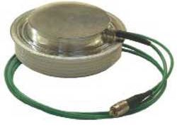
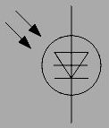

1.6.6. Фототиристоры
Фототиристор — оптоэлектронный полупроводниковый прибор, имеющий структуру, схожую со структурой обычного тиристора, но отличающийся от последнего тем, что включается не напряжением, а светом, падающим на тиристорную структуру.
Обозначение фототиристора на электрических схемах → 
Конструктивно фототиристор представляет собой светочувствительный монокристалл с р–n–р–n-cтруктурой, обычно из кремния, расположенный на медном основании и закрытый герметичной крышкой с прозрачным для света окном. Наибольшее распространение получили конструкции с освещаемым n-эмиттером и с освещаемой р-базой (рис.6.5).
Рис. 6.5. Структура фототиристора.
Принцип действия фототиристора
Если к аноду приложено положительное (по отношению к катоду) напряжение, то в темновом режиме крайние переходы окажутся смещенными в прямом, а средний переход — в обратном направлении, и фототиристор будет находиться в закрытом состоянии. При освещении перехода в тонкой базе происходит генерация пар электрон-дырка. Электроны с поверхности диффундируют в глубь дырочного слоя и свободно проходят через средний переход к аноду. При определенной интенсивности светового излучения, соответствующей световой мощности (1–10) •102 Вт/см2, концентрация электронов возрастает, вызывая лавинообразное умножение носителей заряда с последующим включением фототиристора. Максимум спектральной чувствительности лежит в диапазоне 0,9–1,1 мкм.
Основное достоинство фототиристоров – способность переключать значительные токи и напряжения слабыми световыми сигналами – используется в устройствах «силовой» оптоэлектроники, таких, как системы управления исполнительными механизмами, выпрямителями и преобразователями.
Фототиристор применяется в управляемых светом выпрямителях и наиболее эффективен в управлении сильными токами при высоких напряжениях. Скорость отклика на свет — менее 1 мкс.